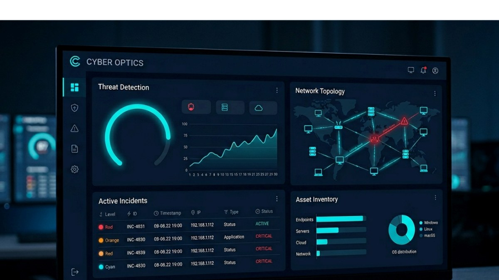
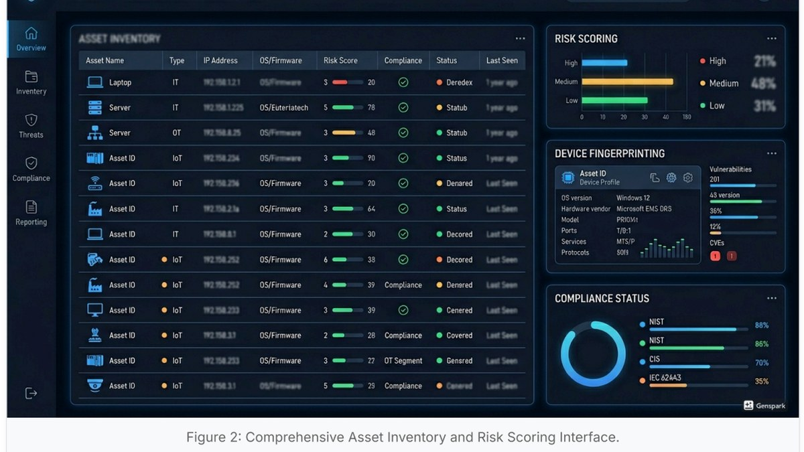
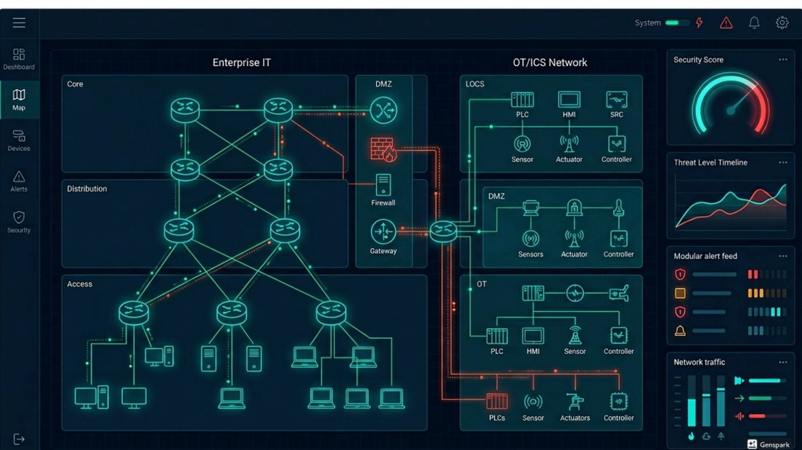
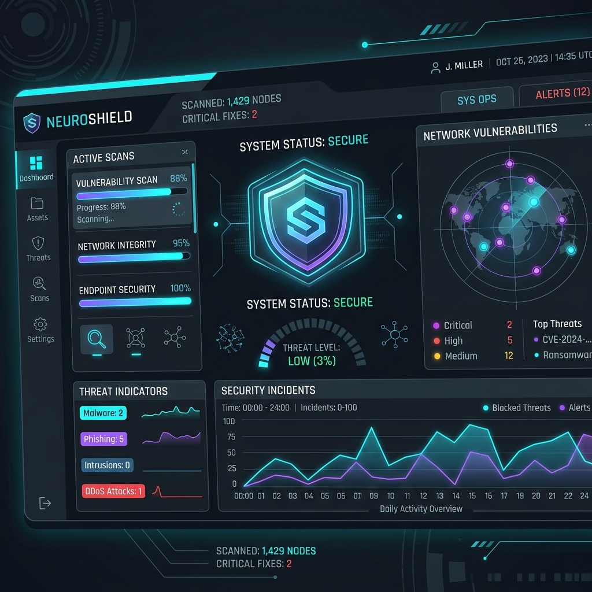
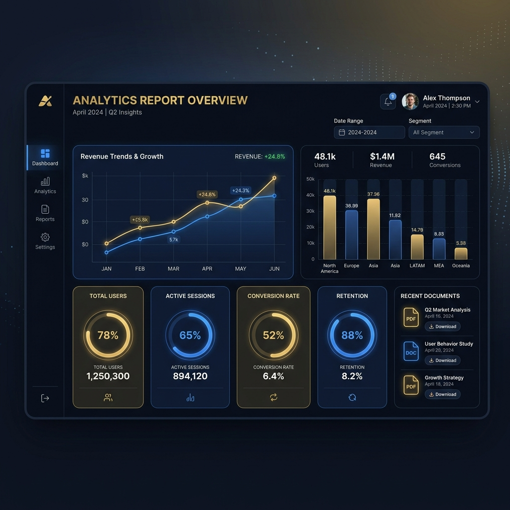
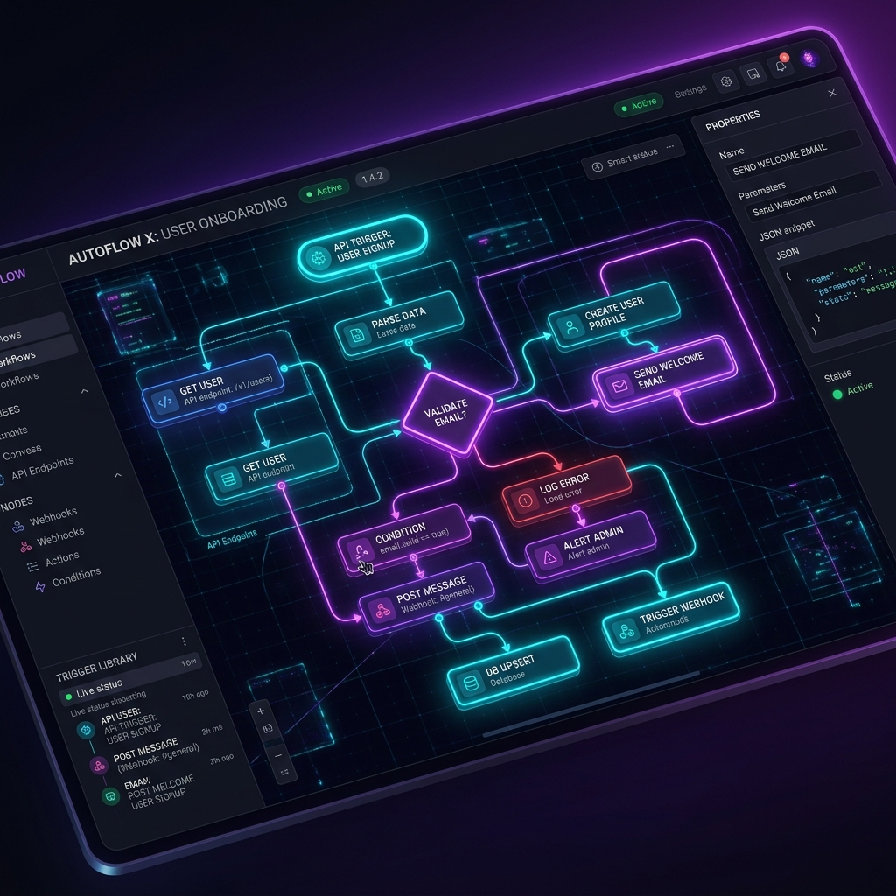

SIEM & Security Operations (SOC)
หน้าแดชบอร์ดสรุปผลการวิเคราะห์ภัยคุกคามแบบเรียลไทม์ ค้นหาความสัมพันธ์ของ Log จากหลากหลายแหล่ง พร้อมเทคโนโลยีวิเคราะห์พฤติกรรมผู้ใช้งานและอุปกรณ์ (UEBA) เพื่อตรวจจับสิ่งผิดปกติได้อย่างแม่นยำ
Centralized Log Management
MarLog เป็นระบบสำหรับจัดเก็บและบริหารจัดการ Log แบบรวมศูนย์ (Centralized Log Management) ที่ออกแบบมาเพื่อช่วยรวบรวมข้อมูล Log จากอุปกรณ์ ระบบเครือข่าย และแอปพลิเคชันต่าง ๆ ภายในองค์กร นำมารวมไว้ในที่เดียวกัน เพื่อให้ง่ายต่อการวิเคราะห์ ประเมิน ตรวจสอบ และสืบค้นย้อนหลังเมื่อเกิดเหตุภัยคุกคามทางไซเบอร์
แหล่งข้อมูล Log ที่รองรับการเชื่อมต่อ
Core Features

หน้าแดชบอร์ดสรุปผลการวิเคราะห์ภัยคุกคามแบบเรียลไทม์ ค้นหาความสัมพันธ์ของ Log จากหลากหลายแหล่ง พร้อมเทคโนโลยีวิเคราะห์พฤติกรรมผู้ใช้งานและอุปกรณ์ (UEBA) เพื่อตรวจจับสิ่งผิดปกติได้อย่างแม่นยำ

ค้นหาและระบุตัวตนของอุปกรณ์ในระบบเครือข่าย (ทั้ง IT และ OT/IoT) โดยอัตโนมัติ พร้อมการจัดทำฐานข้อมูลรายละเอียดอุปกรณ์ (CMDB) ระบบปฏิบัติการ และประวัติความเสี่ยง

สร้างและจำลองแผนผังโครงสร้างเครือข่าย Layer 2 / Layer 3 แบบอัตโนมัติ เพื่อช่วยให้มองเห็นความเชื่อมโยงของอุปกรณ์ ตรวจสอบสถานะการเชื่อมต่อ และปริมาณแบนด์วิดท์แบบเรียลไทม์

วิเคราะห์ช่องโหว่ของอุปกรณ์ต่าง ๆ ในเครือข่ายโดยเทียบกับฐานข้อมูล CVE สากล พร้อมจัดเก็บคะแนนความเสี่ยง (Unified Risk Scoring) และแจ้งเตือนเมื่อพบอุปกรณ์แปลกปลอมในเครือข่าย

ระบบสร้างรายงานที่สามารถกำหนดข้อมูลเองได้ (Custom Report Builder) รองรับการส่งออก PDF, CSV, JSON รวมถึงตั้งเวลาส่งรายงานทางอีเมล และสร้างรายงานรองรับมาตรฐาน PDPA, ISO 27001, NIST CSF, PCI-DSS

ระบบตอบสนองภัยคุกคามอัตโนมัติ (SOAR) ด้วย Visual Playbook Builder ช่วยให้ทีมผู้ดูแลระบบสามารถกำหนดการตอบสนอง บล็อกไอพี หรือกักกันเครื่องที่ติดมัลแวร์ได้ทันทีผ่าน API
Customer Benefits